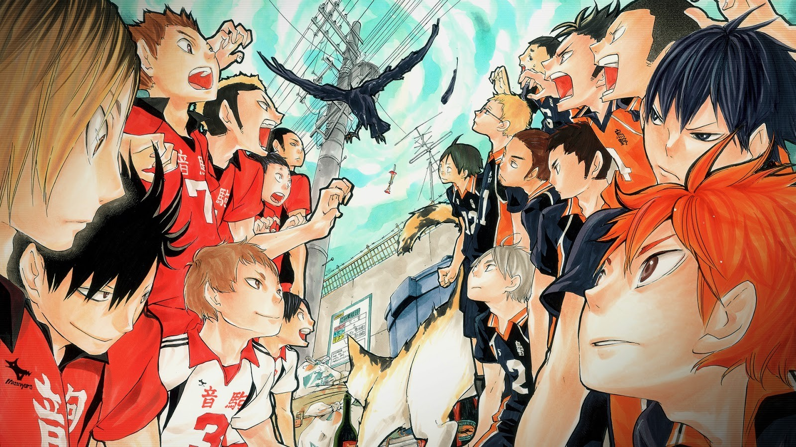
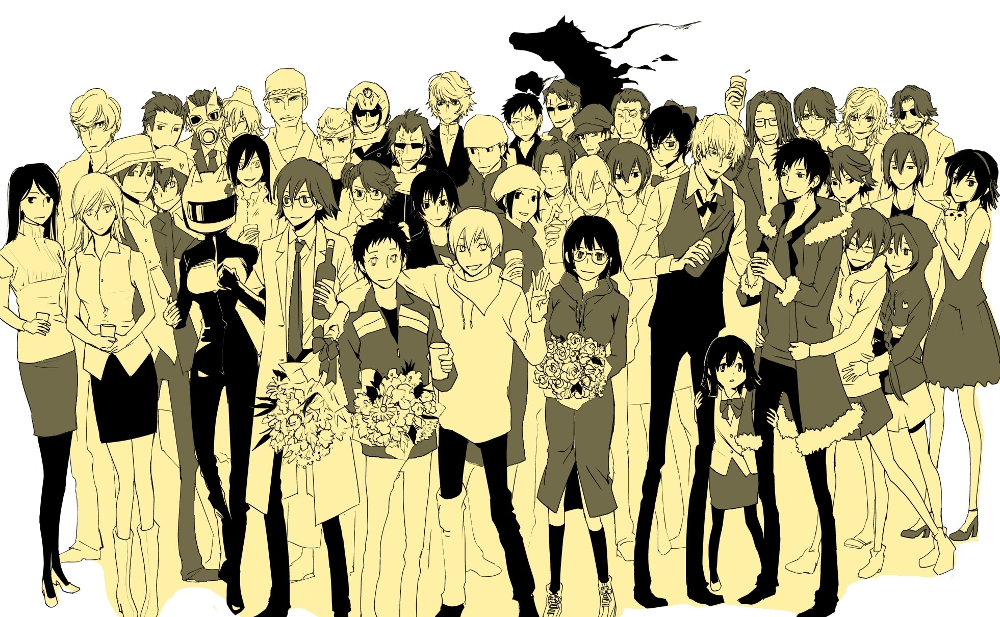
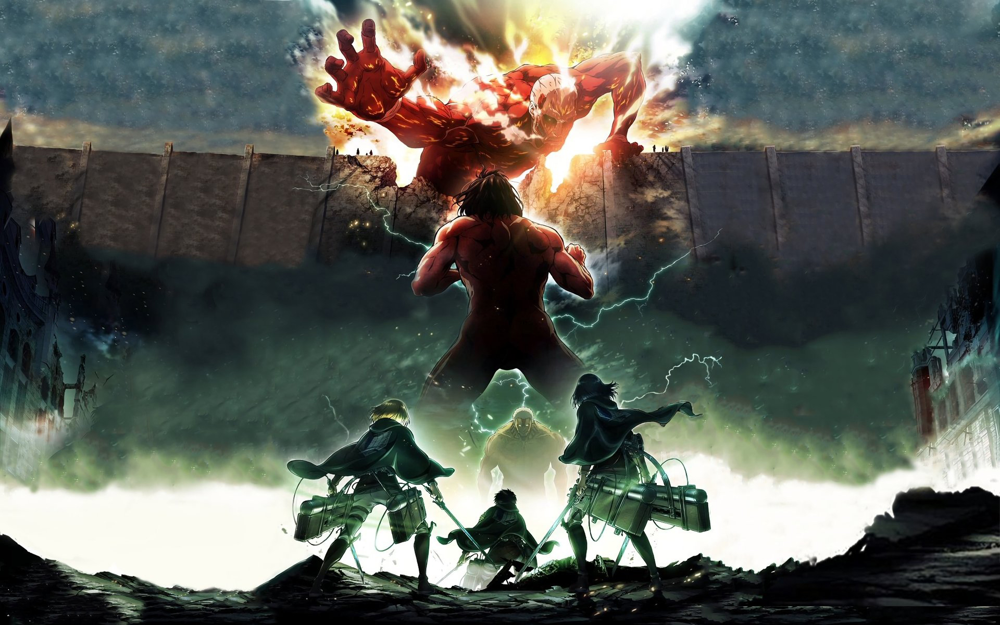
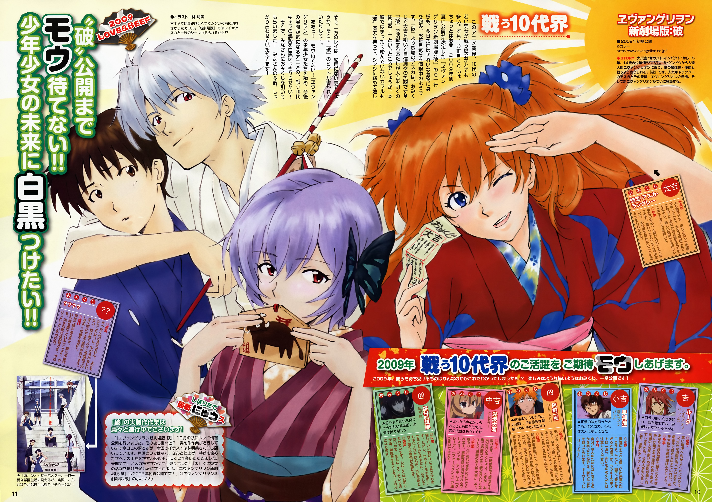
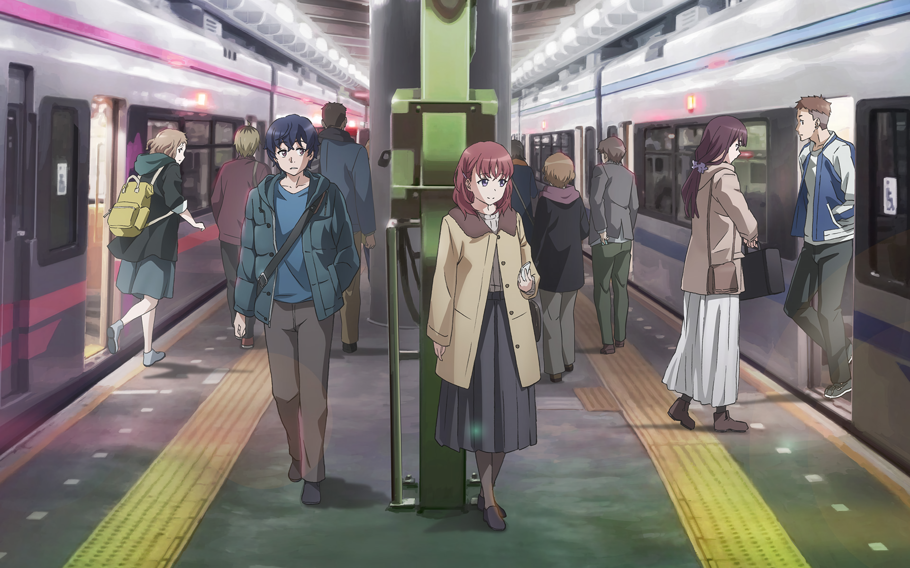

我的启蒙动漫之一，看过的第一部后宫番，喜欢溜夏和墨酱！虽然这个男主有点拉垮，但不影响我为老婆充值，赶紧出第二季吧，虽然都已经知道所有情节了
我的启蒙动漫之一，看过的第一部后宫番，喜欢溜夏和墨酱！虽然这个男主有点拉垮，但不影响我为老婆充值，赶紧出第二季吧，虽然都已经知道所有情节了
最喜欢的运动番，最喜欢的角色是吉川彻，我最喜欢努力的天才，追了所有的动漫，看完了完结的一百话漫画，古馆老师永远的神


最喜欢的氛围感动漫，无头骑士异闻录，让我有想要订机票立马前往池袋的冲动，还没看完，但争取在高中毕业之前看完吧
第一次被震撼的动漫，虽然看完第四季就没有很想看了，最喜欢的是Mikasa和Sasha(挂掉啦)可能还会继续看吧，为了Mikasa把动漫老老实实看完咯


EVA一直是最喜欢的机战番，但其实里面其他的元素非常多，强烈推荐二十年代的新世纪福音战士TV版，经典永存，很难得一部动漫中看似是站在对立面的两位女主角我都喜欢，虽然但是应该还是可能会更偏爱香香一点吧
超级无敌大冷门，最喜欢的纯爱动漫，可能有人觉得没有那么纯但我觉得已经够纯了哈哈哈哈，写实非常的真实，看到中后段会有压抑的感觉我很喜欢
